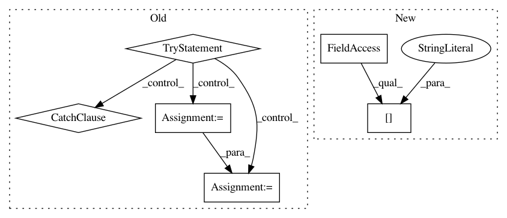

f87d98c6aa5a8dd8958c8b9e3ec6262c091acd28,PyInstaller/loader/rthooks/pyi_rth_qt5.py,,,#,18
Before Change
qt_module_obj = __import__("PyQt5.Qt").__dict__["Qt"]
for module_name in PYQT_MODULES:
try:
// This is always the top-level "PyQt5" module.
top_level_module_obj = __import__(PYQT_PACKAGE + "." + module_name)
// Grab the module we are interested in from the top-level module
module_obj = top_level_module_obj.__dict__[module_name]
// Merge symbols exported by the module with PyQt5.Qt
qt_module_obj.__dict__.update(module_obj.__dict__)
except ImportError:
// It is OK if some module is missing. E.g.: QtMacExtras is built only on
// OS X and QtWinExtras is built only on Windows.
pass
After Change
// ``utils/hooks/qt.py`` for more details.
pyqt_path = os.path.join(sys._MEIPASS, "PyQt5", "Qt")
os.environ["QT_PLUGIN_PATH"] = os.path.join(pyqt_path, "plugins")
os.environ["QML2_IMPORT_PATH"] = os.path.join(pyqt_path, "qml")
In pattern: SUPERPATTERN
Frequency: 3
Non-data size: 6
Instances
Project Name: pyinstaller/pyinstaller
Commit Name: f87d98c6aa5a8dd8958c8b9e3ec6262c091acd28
Time: 2018-04-02
Author: bjones@ece.msstate.edu
File Name: PyInstaller/loader/rthooks/pyi_rth_qt5.py
Class Name:
Method Name:
Project Name: yahoo/TensorFlowOnSpark
Commit Name: 981e4266d4ea816b08a762193bd52f40cd1a3242
Time: 2019-08-07
Author: leewyang@verizonmedia.com
File Name: examples/mnist/keras/mnist_inference.py
Class Name:
Method Name: inference
Project Name: akkana/scripts
Commit Name: e94d85a8db98f9264cf4f5200d39ea41d8bdb1d0
Time: 2019-09-07
Author: akkana@shallowsky.com
File Name: check_monitors.py
Class Name: XDisp
Method Name: print_monitor